UnitedTribes POC v1.5.7 · March 11, 2026 · Dev Priorities
Modals, popovers, and media cards as they exist today on port 5174 (v1.5.7)
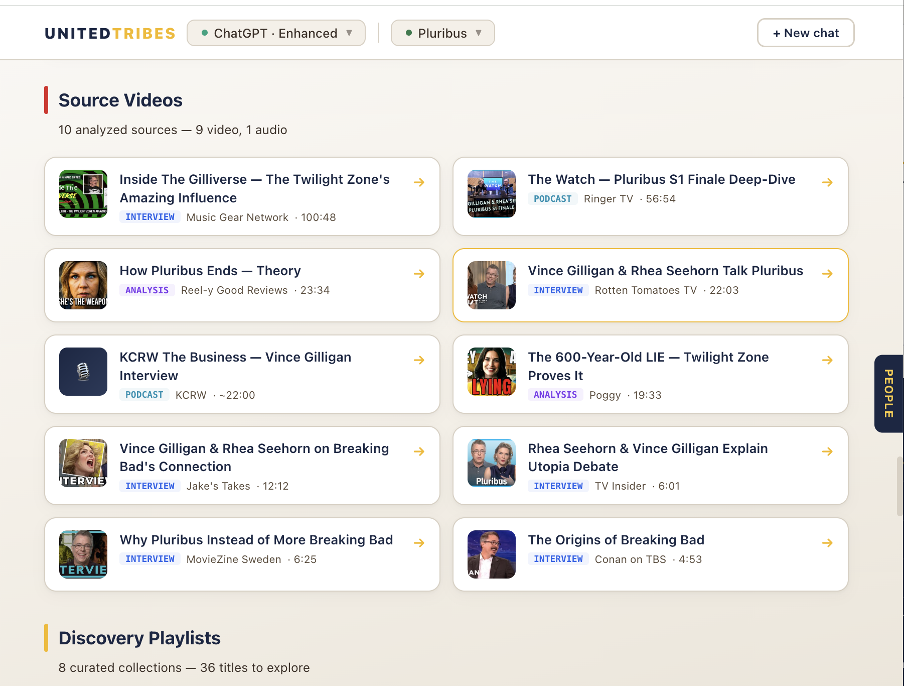
App.jsx · Entity Detail Screen · Source Videos section
10 analyzed source videos displayed in a 2-column grid. Each card shows thumbnail, title, type badge (INTERVIEW / PODCAST / ANALYSIS), source name, and duration. Click arrow to expand inline.
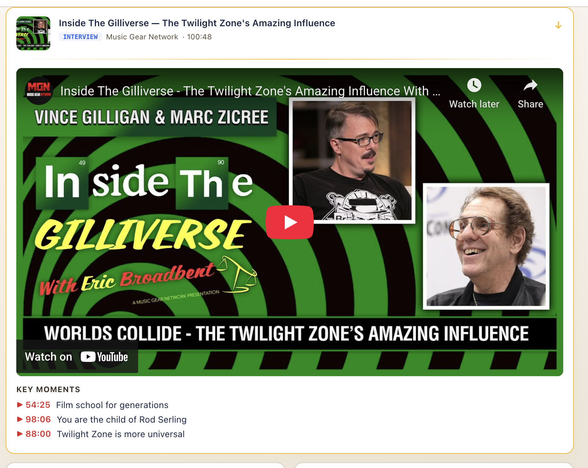
App.jsx · Entity Detail Screen · Source video expansion
Clicking a source video arrow expands it inline with embedded YouTube player and KEY MOMENTS below. Each key moment has a timestamp and description.
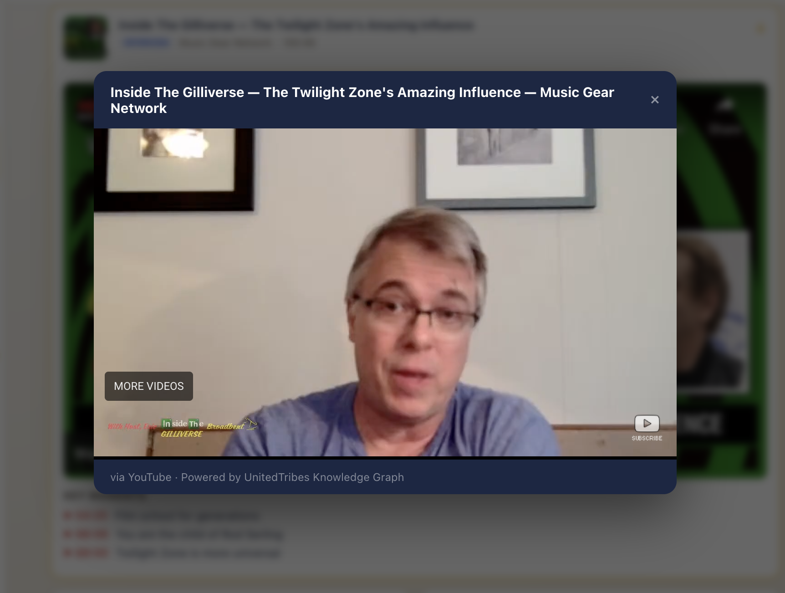
App.jsx · VideoModal opens over expanded source video
When the user clicks a KEY MOMENT timestamp in the expanded source video, a full VideoModal opens ON TOP of the already-playing inline video. Two videos playing simultaneously. The expanded video continues behind the overlay.
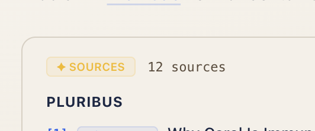
App.jsx ~line 5895 · Response Screen · Sources panel
The "✦ SOURCES" pill that toggles the citations panel. Fixed in this session: gold sparkle, navy text, white pill with border — matches the app design system.
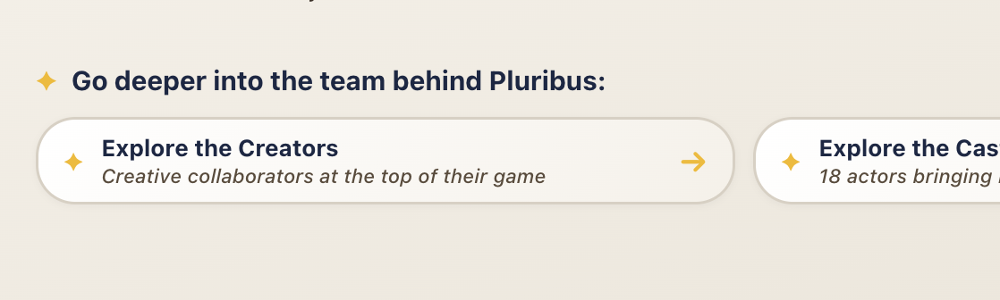
App.jsx · Response Screen · "Go deeper" discovery pills
The established pattern for gold sparkle + text styling throughout the app. "Explore the Creators" and "Explore the Cast" pills use the same gold/navy palette that the Sources pill now matches.
Original design bible mockups showing the target popover system for each entity type
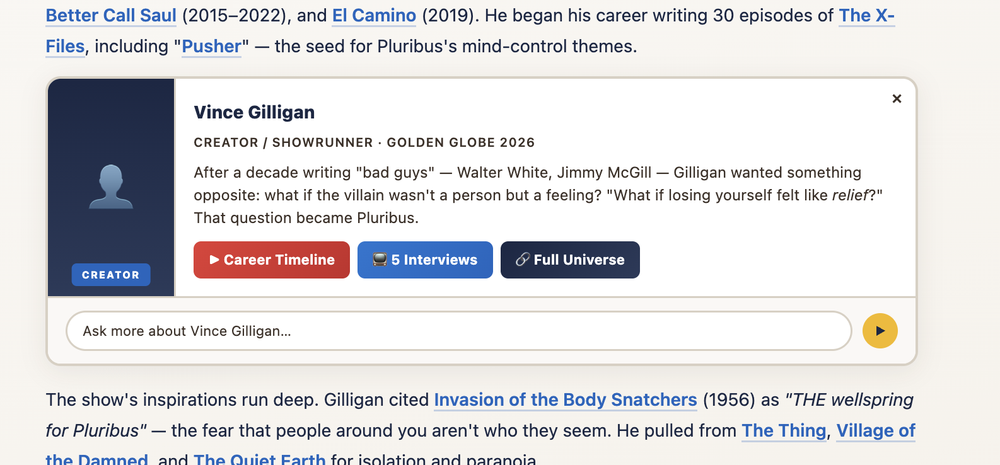
Design Bible Prototype · Entity Type: CREATOR
CREATOR badge, "CREATOR / SHOWRUNNER · GOLDEN GLOBE 2026" subtitle. Career timeline buttons, interview count, "Full Universe" navigation. This is the most senior entity type — career scope, not just one work.
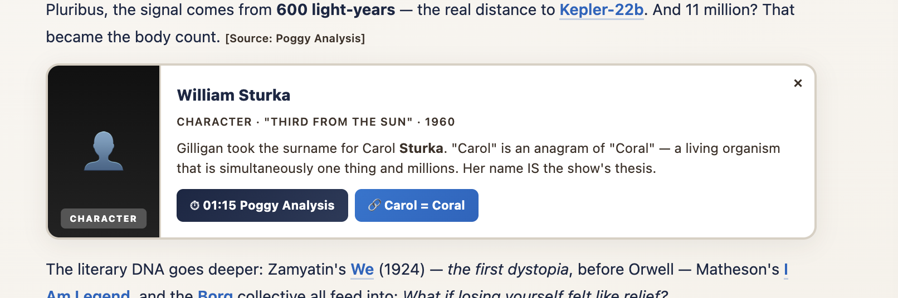
Design Bible Prototype · Entity Type: CHARACTER
CHARACTER badge, "THIRD FROM THE SUN · 1960" subtitle. Contextual description connecting Carol Sturka's surname to this Twilight Zone character. Shows the editorial depth: "Carol" is an anagram of "Coral."
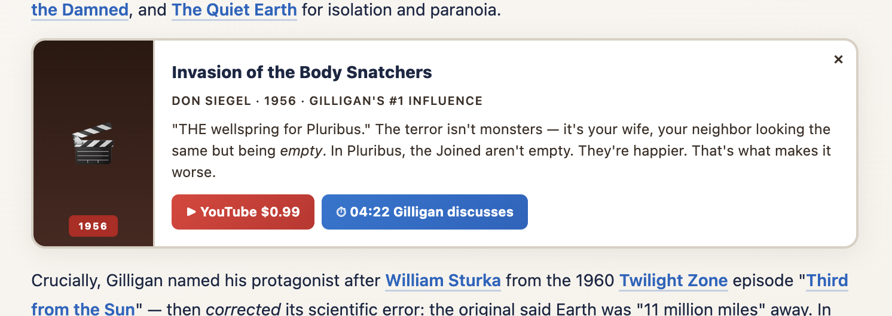
Design Bible Prototype · Entity Type: FILM
1956 red badge, film poster, editorial description connecting Body Snatchers to Pluribus thematically ("What if losing yourself felt like relief?"). Commerce and timestamp buttons.
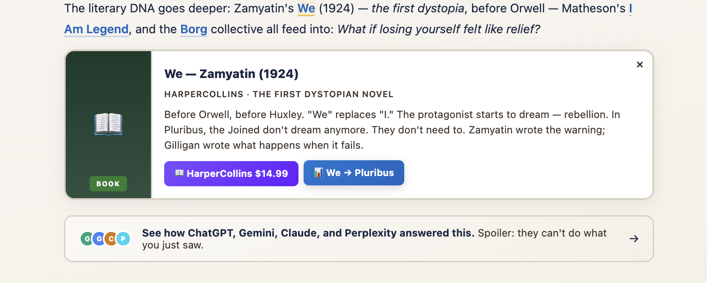
Design Bible Prototype · Entity Type: BOOK
BOOK badge, "HARPERCOLLINS · THE FIRST DYSTOPIAN NOVEL" subtitle with publisher attribution. Cover image. Editorial connection: "Before Orwell, before Huxley... Zamyatin wrote the warning; Gilligan wrote what happens when it fails."
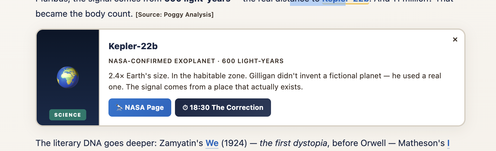
Design Bible Prototype · Entity Type: SCIENCE
SCIENCE badge, "NASA-CONFIRMED EXOPLANET · 600 LIGHT-YEARS" subtitle. Globe icon. "Gilligan didn't invent a fictional planet — he used a real one."
Larger UI sections from the design bible: expanded characters, relationships, Go Deeper, music system
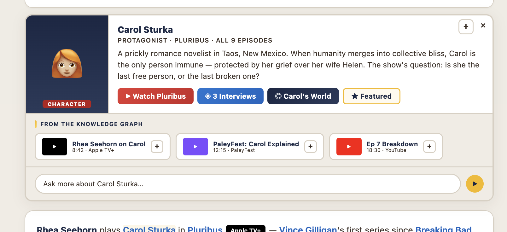
Design Bible Prototype · Expanded Entity Detail
The full expanded popover for Carol Sturka. CHARACTER badge, + button (Add to My Stuff), ✕ dismiss. Four action buttons: Watch Pluribus, 3 Interviews, Carol's World, Featured. Below: FROM THE KNOWLEDGE GRAPH section with 3 media cards showing platform badges (Apple TV+, PaleyFest, YouTube) with durations. Ask input at bottom.
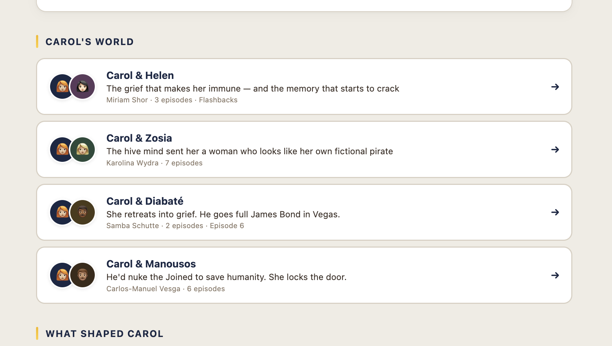
Design Bible Prototype · Character Relationships Section
Dual-avatar relationship cards: Carol & Helen, Carol & Zosia, Carol & Diabaté, Carol & Manousos. Each card has editorial one-liner, actor name, episode count, and arrow drill-down.
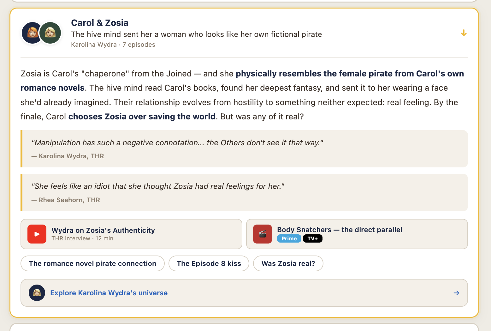
Design Bible Prototype · Expanded Relationship Detail
Full expanded relationship view with editorial narrative, pull quotes with attribution (Karolina Wydra / THR, Rhea Seehorn / THR), media cards with platform badges (Prime, TV+), suggestion chips ("The romance novel pirate connection", "The Episode 8 kiss", "Was Zosia real?"), and "Explore Karolina Wydra's universe" link.
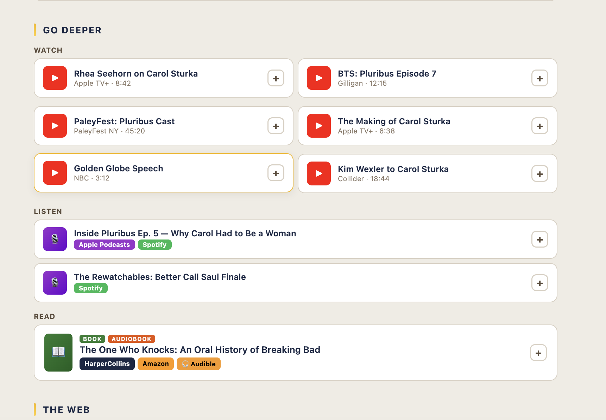
Design Bible Prototype · Entity Detail · Go Deeper Section
Three media groups: WATCH (6 videos with YouTube thumbnails, platform/duration, + button), LISTEN (2 podcasts with Apple Podcasts + Spotify badges, + button), READ (1 book with BOOK + AUDIOBOOK badges, HarperCollins + Amazon + Audible badges, + button).
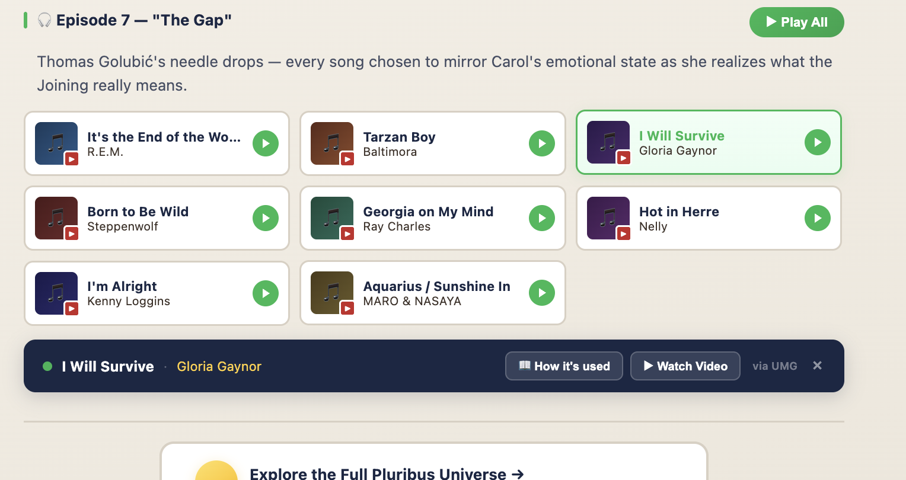
Design Bible Prototype · Episode Music Section · Episode 7 "The Gap"
3-column grid of 8 songs per episode. Each tile: album art, YouTube badge, title, artist, green play button. Selected song highlighted with green border. NowPlayingBar at bottom: green dot (playing), title, artist, "How it's used" button, "Watch Video" button, "via UMG" attribution, ✕ dismiss.
The system that will govern ALL modals across ALL universes: Pluribus, Blue Note, Patti Smith, Greta Gerwig, and beyond
No target="_blank", no ↗ arrows, no "Watch on YouTube ↗". Everything plays, reads, and displays inline. The user never leaves UnitedTribes.
Every modal, popover, media card, song tile, book card — all get a + button. The library is how users build their own universe.
Videos, podcasts, music — all play inside their modal/card. No spawning second players. No double modals.
Point to specific moments, not generic media. "⏱ 04:22 Gilligan discusses" not just "Watch interview." Timestamps seek within the current player.
Click the same trigger to close. Don't make users hunt for ✕. The popover that opened on entity click should close on the same click.
Show where to buy/watch/listen with real brand badges. Apple TV+, Netflix, Spotify, HarperCollins, Amazon, Audible — real logos, real prices.
Same modal shell for Pluribus, Blue Note, Patti Smith, Greta Gerwig, and every future universe. Content adapts. System stays consistent.
Never stack modals. If a KEY MOMENT is clicked inside an expanded video, seek — don't spawn. If a popover opens, close the previous one.
window.open(..., "_blank") — opens external tab<a target="_blank"> — "Watch on YouTube ↗"